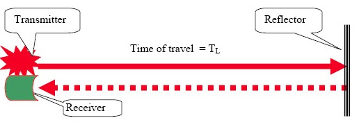

Samantha Harris
Research Assistant - Graduate Student
Curious and driven graduate student completing her Master’s degree in Mechanical Engineering in December 2021. With a strong desire to expand my skills, I enjoy the challenge of mastering different roles of an organization. For the past year, I have built and managed the fast-paced environment of the University of Florida’s new Biodesign Laboratory. I am seeking a company that values creativity, continuous learning, and provides opportunities for junior software developers to lead projects.
Education
Bachelor of Science
Stetson University
Deland, FL
2015-2019
Major: Physics | Minor: Math
3.7 GPA
Master of Science
University of Florida
Gainesville, FL
2019-2021
Mechanical Engineering
3.7 GPA
Skills
- HTML
- CSS
- Javascript
- Unix
- Python
- Github
- MATLAB
- LabView
- < 1 year
- < 1 year
- < 1 year
- 2 years
- 1 year
- 1 year
- 3 years
- 2 years
Projects
In-Memory File System
Principles of Computer System Design Course
University of Florida
August 2021 - present
- Extended upon an in-memory file system and shell in python
- Grasped concept of data organization using inodes and blocks
- Implemented common unix commands such as ls and cat
- Incorporated read function to the file system
- Click to visit project page in Github
University of Florida
August 2021 - present
- Extended upon an in-memory file system and shell in python
- Grasped concept of data organization using inodes and blocks
- Implemented common unix commands such as ls and cat
- Incorporated read function to the file system
- Click to visit project page in Github

Syringe Pump Automation
Biodesign Laboratory
University of Florida
June 2021
- Created a virtual instrument (VI) in Labview to control three syringe pumps
- The VI controlled the volume and rate of fluid going into a microfluidic device
- Sent and received serial communications between computer and syringe pumps
- Salvaged syringe pumps from broken DNA sequencing system
- Click to visit project page in Github
University of Florida
June 2021
- Created a virtual instrument (VI) in Labview to control three syringe pumps
- The VI controlled the volume and rate of fluid going into a microfluidic device
- Sent and received serial communications between computer and syringe pumps
- Salvaged syringe pumps from broken DNA sequencing system
- Click to visit project page in Github

Space Mission Analysis
Astrodynamics Course
University of Florida
January 2020 - May 2020
- Performed preliminary analysis for model space missions including missions where a spacecraft is transferred between two bodies using MATLAB
- Designed basic impulsive in-plane and out-of-plane maneuvers to transfer a spacecraft between two orbits
- Click to visit project page in Github

Limitations of a Laser Range Finder
Senior Project
Stetson University
January 2017 - May 2019
- Investigated fundamental concepts and demonstrated real world applications of laser range finders
- Read measurements from voltage probe and rotary motion sensor into Logger Pro
- Mapped various terrains on polar plots using KaleidaGraph
- Analyzed and recognized issues of data when results differed from expected outcomes

Work Experience
Research Assistant
Dr. Jing Pan's Biodesign Laboratory at the University of Florida
Gainesville, FL
May 2020 - present
- Led the synthetic cell project utilizing DNA and aptamers to control the motility of a synthetic cell
- Elevated adaptability skills by solving and maneuvering through issues that occurred during data collection
- Fabricated silicon master molds of microfluidic devices using photolithography and etching
- Guided lab member in constructing a pressure-driven flow controller for micro-volume fluid flow
- Aided in the construction of a custom-built prism-based total internal reflection microscope
- Simplified and explained complex concepts through oral communication and graphic design
Lab Manager
Dr. Jing Pan's Biodesign Laboratory at the University of Florida
Gainesville, FL
August 2020 - present
- Built the Biodesign Laboratory by researching and purchasing essential supplies and equipment
- Kept track of the lab’s chemical/supplies/equipment inventory and financial spending
- Wrote standard operating procedures (SOPs) for dangerous or delicate operations in the lab
- Maintained the lab and its equipment: DI water machine, 3D printer, Nikon Ti-Eclipse, etc.
Lab Safety Manager
Dr. Jing Pan's Biodesign Laboratory at the University of Florida
Gainesville, FL
August 2020 - present
- Exemplified responsibility and attention to detail by running monthly lab safety checks: hazardous waste, laser safety, compressed cylinders, etc.
- Met with Environmental Health & Safety inspectors to ensure compliance with safety regulations
- Practiced proper safety precautions during experiments and held lab mates accountable
Math & Physics Tutor
Stetson University's Student Success Center
Deland, FL
August 2017 - May 2019
- Tutored students in College Physics, Modern Physics, Linear Algebra, and Calculus I, II & III
- Advised students on how to improve study skills and implement new learning methods
- Used oral, written, and non-verbal communication channels to instruct and educate students
- Broke down difficult problems into simpler concepts that could be easily interpreted
- Built meaningful connections with students and adapted to their learning needs
Research Intern
University of Arizona's Cognitive and Autonomous Test Vehicle Research Experience for Undergraduates (REU)
Tucson, AZ
June 2018 - August 2018
- Contributed to project involving network optimization an autonomous vehicle
- Exhibited resilience, adaptability, and drive by self-teaching javascript and a web-based generic modeling environment (WebGME)
- Presented weekly progress to department head, graduate student mentors and other interns
- Demonstrated accomplishments to the local Tucson news network
- Click to view video of REU experience
Athletics

Division I NCAA Beach Volleyball Athlete
Stetson University
Deland, FL
August 2015 - May 2019
- Demonstrated teamwork by understanding the necessity of using individual strengths, shared responsibility, conflict management and respect to achieve common goals
- Developed excellent time management and organizational skills by balancing athletics and academics
- Practiced 20+ hours a week, competed nationally during Fall and Spring
- Assisted team in winning Atlantic Sun Conference Championship in 2017, 2018 and 2019
- Competed in the NCAA Beach Volleyball National Championships in 2016 and 2019
- Ranked top 20 in the nation 2015-2019, placed 6th in the nation in 2019
- Click to see higlight
Awards
-
Graduate School Preeminence Award Fellowship
University of Florida
2019
-
Maris Prize for Senior Presentation
Stetson University
2019
-
Presidential Academic Scholarship
Stetson University
2015
-
Athletic Beach Volleyball Scholarship
Stetson University
2015